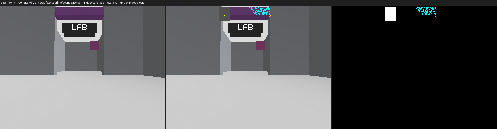
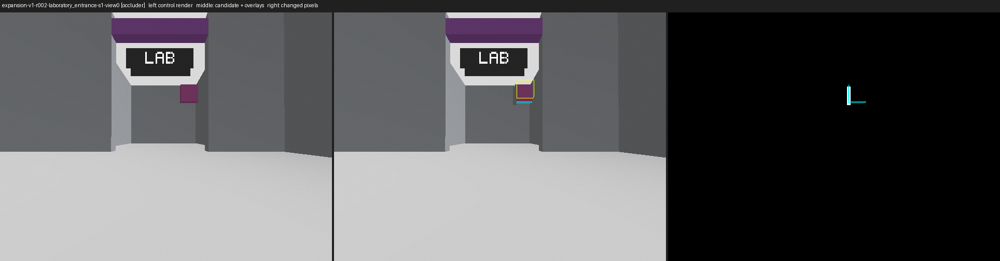
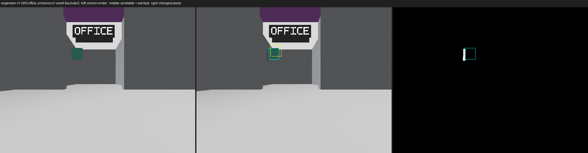
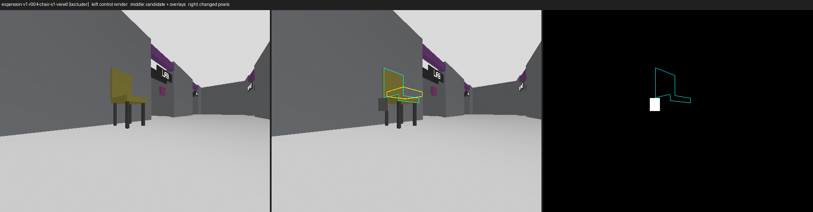
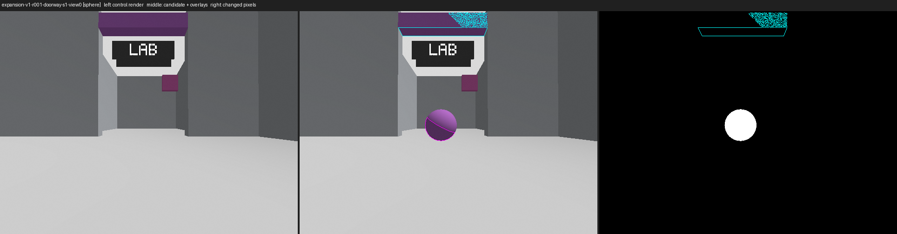
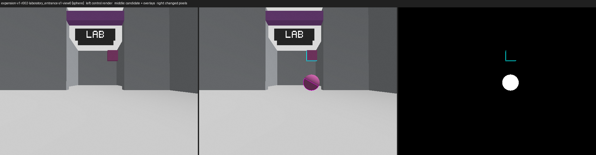
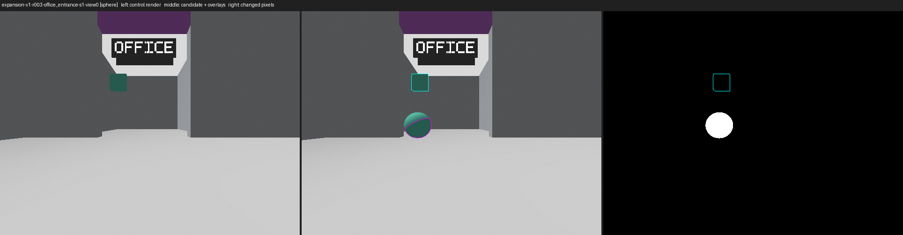
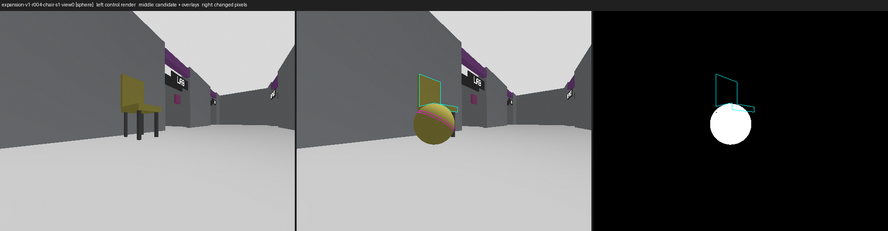

Rendered diagnostic candidates: 80 (8 rendered)
Left image: same-session control render of the unmodified source world. Middle: candidate render with overlays
(yellow: projected provider marker box silhouette for occluders; cyan: target palette pixels; magenta: sphere pixels).
Right: pixels that changed between control and candidate. The occluder definition is 20% of the projected provider
marker box silhouette, not 20% of the whole chair or entrance. Agent measurements are preflight evidence only; your
accept/revise/reject decision per candidate goes in DECISIONS.template.json.
occluder/expansion-v1-r001-chair-s1-view0 occluder · chair · dev_01-r001-red-chair NOT RENDERED
agent preflight measurements (not a verdict)
analytic occluded fraction: 0.20000000000000007 · candidate world.sdf sha256 d6c5c84adf9ace5f…
occluder/expansion-v1-r001-doorway-s1-view0 occluder · doorway · r3geo_base_r001_left_2_doorway CHECK

agent preflight measurements (not a verdict)
- projected_box_pixels: 8639
- rendered_box_coverage: 0.1122815140641278
- changed_pixels: 2173
- changed_pixels_outside_box: 1203
- control_target_pixels: 4584
- candidate_target_pixels: 3988
- control_target_pixels_in_box: 3174
- control_target_pixels_in_box_covered: 232
- target_pixels_in_box_occluded_fraction: 0.07309388783868935
- box_unchanged_fraction: 0.8877184859358722
- screen_visible: true
- target_identifiable: true
- box_coverage_within_tolerance: false
- passed: false
analytic occluded fraction: 0.19999999999999987 · candidate world.sdf sha256 89023ac45b65672c…
occluder/expansion-v1-r001-laboratory_entrance-s1-view0 occluder · laboratory_entrance · r3geo_base_r001_left_2_entrance NOT RENDERED
agent preflight measurements (not a verdict)
analytic occluded fraction: 0.20000000000000018 · candidate world.sdf sha256 cfd3b6c2cbc06285…
occluder/expansion-v1-r001-office_entrance-s1-view0 occluder · office_entrance · r3geo_base_r001_right_2_entrance NOT RENDERED
agent preflight measurements (not a verdict)
analytic occluded fraction: 0.1999999999999997 · candidate world.sdf sha256 8586b1af4cbc0241…
occluder/expansion-v1-r002-chair-s1-view0 occluder · chair · dev_01-r002-blue-chair NOT RENDERED
agent preflight measurements (not a verdict)
analytic occluded fraction: 0.20000000000000004 · candidate world.sdf sha256 07b7c8eed5fd52d3…
occluder/expansion-v1-r002-doorway-s1-view0 occluder · doorway · r3geo_base_r002_left_2_doorway NOT RENDERED
agent preflight measurements (not a verdict)
analytic occluded fraction: 0.20000000000000026 · candidate world.sdf sha256 745067fd3936ae0c…
occluder/expansion-v1-r002-laboratory_entrance-s1-view0 occluder · laboratory_entrance · r3geo_base_r002_left_2_entrance CHECK

agent preflight measurements (not a verdict)
- projected_box_pixels: 1217
- rendered_box_coverage: 0.0
- changed_pixels: 252
- changed_pixels_outside_box: 252
- control_target_pixels: 164
- candidate_target_pixels: 91
- control_target_pixels_in_box: 0
- control_target_pixels_in_box_covered: 0
- target_pixels_in_box_occluded_fraction: null
- box_unchanged_fraction: 1.0
- screen_visible: false
- target_identifiable: true
- box_coverage_within_tolerance: false
- passed: false
analytic occluded fraction: 0.20000000000000018 · candidate world.sdf sha256 54190e8b2c2fa184…
occluder/expansion-v1-r002-office_entrance-s1-view0 occluder · office_entrance · r3geo_base_r002_right_2_entrance NOT RENDERED
agent preflight measurements (not a verdict)
analytic occluded fraction: 0.2000000000000003 · candidate world.sdf sha256 2f39fc87e7e2420c…
occluder/expansion-v1-r003-chair-s1-view0 occluder · chair · dev_02-r003-green-chair NOT RENDERED
agent preflight measurements (not a verdict)
analytic occluded fraction: 0.20000000000000007 · candidate world.sdf sha256 d0781955aff9c78d…
occluder/expansion-v1-r003-doorway-s1-view0 occluder · doorway · r3geo_base_r003_left_2_doorway NOT RENDERED
agent preflight measurements (not a verdict)
analytic occluded fraction: 0.1999999999999999 · candidate world.sdf sha256 aa6b8673b725da6b…
occluder/expansion-v1-r003-laboratory_entrance-s1-view0 occluder · laboratory_entrance · r3geo_base_r003_left_2_entrance NOT RENDERED
agent preflight measurements (not a verdict)
analytic occluded fraction: 0.2 · candidate world.sdf sha256 77496501f99f1d7a…
occluder/expansion-v1-r003-office_entrance-s1-view0 occluder · office_entrance · r3geo_base_r003_right_2_entrance CHECK

agent preflight measurements (not a verdict)
- projected_box_pixels: 1359
- rendered_box_coverage: 0.0
- changed_pixels: 287
- changed_pixels_outside_box: 287
- control_target_pixels: 1391
- candidate_target_pixels: 1261
- control_target_pixels_in_box: 776
- control_target_pixels_in_box_covered: 0
- target_pixels_in_box_occluded_fraction: 0.0
- box_unchanged_fraction: 1.0
- screen_visible: false
- target_identifiable: true
- box_coverage_within_tolerance: false
- passed: false
analytic occluded fraction: 0.20000000000000012 · candidate world.sdf sha256 cdeed485a6df247c…
occluder/expansion-v1-r004-chair-s1-view0 occluder · chair · dev_02-r004-yellow-chair CHECK

agent preflight measurements (not a verdict)
- projected_box_pixels: 1706
- rendered_box_coverage: 0.0
- changed_pixels: 744
- changed_pixels_outside_box: 744
- control_target_pixels: 3391
- candidate_target_pixels: 3391
- control_target_pixels_in_box: 828
- control_target_pixels_in_box_covered: 0
- target_pixels_in_box_occluded_fraction: 0.0
- box_unchanged_fraction: 1.0
- screen_visible: false
- target_identifiable: true
- box_coverage_within_tolerance: false
- passed: false
analytic occluded fraction: 0.20000000000000007 · candidate world.sdf sha256 e0a3fe4eab91b1a0…
occluder/expansion-v1-r004-doorway-s1-view0 occluder · doorway · r3geo_base_r004_left_2_doorway NOT RENDERED
agent preflight measurements (not a verdict)
analytic occluded fraction: 0.20000000000000004 · candidate world.sdf sha256 6c03b2c76504a377…
occluder/expansion-v1-r004-laboratory_entrance-s1-view0 occluder · laboratory_entrance · r3geo_base_r004_left_2_entrance NOT RENDERED
agent preflight measurements (not a verdict)
analytic occluded fraction: 0.20000000000000043 · candidate world.sdf sha256 8380e41a34486e97…
occluder/expansion-v1-r004-office_entrance-s1-view0 occluder · office_entrance · r3geo_base_r004_right_2_entrance NOT RENDERED
agent preflight measurements (not a verdict)
analytic occluded fraction: 0.1999999999999999 · candidate world.sdf sha256 d97057f4b39cbcae…
occluder/expansion-v1-r005-chair-s1-view0 occluder · chair · dev_03-r005-red-chair NOT RENDERED
agent preflight measurements (not a verdict)
analytic occluded fraction: 0.20000000000000004 · candidate world.sdf sha256 c3a5c95da4461050…
occluder/expansion-v1-r005-doorway-s1-view0 occluder · doorway · r3geo_base_r005_right_2_doorway NOT RENDERED
agent preflight measurements (not a verdict)
analytic occluded fraction: 0.20000000000000007 · candidate world.sdf sha256 e8c8d6134b949456…
occluder/expansion-v1-r005-laboratory_entrance-s1-view0 occluder · laboratory_entrance · r3geo_base_r005_right_2_entrance NOT RENDERED
agent preflight measurements (not a verdict)
analytic occluded fraction: 0.20000000000000026 · candidate world.sdf sha256 271d188fe21c99e0…
occluder/expansion-v1-r005-office_entrance-s1-view0 occluder · office_entrance · r3geo_base_r005_left_2_entrance NOT RENDERED
agent preflight measurements (not a verdict)
analytic occluded fraction: 0.20000000000000004 · candidate world.sdf sha256 d84705cbd186b756…
occluder/expansion-v1-r006-chair-s1-view0 occluder · chair · dev_03-r006-blue-chair NOT RENDERED
agent preflight measurements (not a verdict)
analytic occluded fraction: 0.1999999999999999 · candidate world.sdf sha256 47cbad7e6c6dc406…
occluder/expansion-v1-r006-doorway-s1-view0 occluder · doorway · r3geo_base_r006_right_2_doorway NOT RENDERED
agent preflight measurements (not a verdict)
analytic occluded fraction: 0.2000000000000001 · candidate world.sdf sha256 9c7d80d52eb62ef5…
occluder/expansion-v1-r006-laboratory_entrance-s1-view0 occluder · laboratory_entrance · r3geo_base_r006_right_2_entrance NOT RENDERED
agent preflight measurements (not a verdict)
analytic occluded fraction: 0.20000000000000032 · candidate world.sdf sha256 ae5766aa1e41ccec…
occluder/expansion-v1-r006-office_entrance-s1-view0 occluder · office_entrance · r3geo_base_r006_left_2_entrance NOT RENDERED
agent preflight measurements (not a verdict)
analytic occluded fraction: 0.1999999999999999 · candidate world.sdf sha256 499759b192430c46…
occluder/expansion-v1-r007-chair-s1-view0 occluder · chair · dev_04-r007-green-chair NOT RENDERED
agent preflight measurements (not a verdict)
analytic occluded fraction: 0.20000000000000007 · candidate world.sdf sha256 9cd8d8ce14cbedfd…
occluder/expansion-v1-r007-doorway-s1-view0 occluder · doorway · r3geo_base_r007_right_2_doorway NOT RENDERED
agent preflight measurements (not a verdict)
analytic occluded fraction: 0.19999999999999993 · candidate world.sdf sha256 1075e1c041746da0…
occluder/expansion-v1-r007-laboratory_entrance-s1-view0 occluder · laboratory_entrance · r3geo_base_r007_right_2_entrance NOT RENDERED
agent preflight measurements (not a verdict)
analytic occluded fraction: 0.19999999999999887 · candidate world.sdf sha256 3b2b6715b9705d70…
occluder/expansion-v1-r007-office_entrance-s1-view0 occluder · office_entrance · r3geo_base_r007_left_2_entrance NOT RENDERED
agent preflight measurements (not a verdict)
analytic occluded fraction: 0.20000000000000057 · candidate world.sdf sha256 4b5e4825bacd683e…
occluder/expansion-v1-r008-chair-s1-view0 occluder · chair · dev_04-r008-yellow-chair NOT RENDERED
agent preflight measurements (not a verdict)
analytic occluded fraction: 0.20000000000000004 · candidate world.sdf sha256 b19c5849691187e9…
occluder/expansion-v1-r008-doorway-s1-view0 occluder · doorway · r3geo_base_r008_right_2_doorway NOT RENDERED
agent preflight measurements (not a verdict)
analytic occluded fraction: 0.20000000000000007 · candidate world.sdf sha256 209e892afb17f81e…
occluder/expansion-v1-r008-laboratory_entrance-s1-view0 occluder · laboratory_entrance · r3geo_base_r008_right_2_entrance NOT RENDERED
agent preflight measurements (not a verdict)
analytic occluded fraction: 0.1999999999999997 · candidate world.sdf sha256 609e00dbca869379…
occluder/expansion-v1-r008-office_entrance-s1-view0 occluder · office_entrance · r3geo_base_r008_left_2_entrance NOT RENDERED
agent preflight measurements (not a verdict)
analytic occluded fraction: 0.19999999999999996 · candidate world.sdf sha256 ba497463d50a6ebc…
occluder/expansion-v1-r009-chair-s1-view0 occluder · chair · dev_05-r009-red-chair NOT RENDERED
agent preflight measurements (not a verdict)
analytic occluded fraction: 0.20000000000000007 · candidate world.sdf sha256 26cc7372a764c797…
occluder/expansion-v1-r009-doorway-s1-view0 occluder · doorway · r3geo_base_r009_left_2_doorway NOT RENDERED
agent preflight measurements (not a verdict)
analytic occluded fraction: 0.19999999999999987 · candidate world.sdf sha256 36cd79f6fff62918…
occluder/expansion-v1-r009-laboratory_entrance-s1-view0 occluder · laboratory_entrance · r3geo_base_r009_left_2_entrance NOT RENDERED
agent preflight measurements (not a verdict)
analytic occluded fraction: 0.20000000000000032 · candidate world.sdf sha256 4223ba3729cbcfb4…
occluder/expansion-v1-r009-office_entrance-s1-view0 occluder · office_entrance · r3geo_base_r009_right_2_entrance NOT RENDERED
agent preflight measurements (not a verdict)
analytic occluded fraction: 0.2000000000000006 · candidate world.sdf sha256 a46ddfcc7f651e95…
occluder/expansion-v1-r010-chair-s1-view0 occluder · chair · dev_00-r010-blue-chair NOT RENDERED
agent preflight measurements (not a verdict)
analytic occluded fraction: 0.20000000000000007 · candidate world.sdf sha256 79c92c45da9a6ae0…
occluder/expansion-v1-r010-doorway-s1-view0 occluder · doorway · r3geo_base_r010_left_2_doorway NOT RENDERED
agent preflight measurements (not a verdict)
analytic occluded fraction: 0.19999999999999998 · candidate world.sdf sha256 e2b867f645ecf8f8…
occluder/expansion-v1-r010-laboratory_entrance-s1-view0 occluder · laboratory_entrance · r3geo_base_r010_left_2_entrance NOT RENDERED
agent preflight measurements (not a verdict)
analytic occluded fraction: 0.19999999999999987 · candidate world.sdf sha256 9bac20dbeb8d6f77…
occluder/expansion-v1-r010-office_entrance-s1-view0 occluder · office_entrance · r3geo_base_r010_right_2_entrance NOT RENDERED
agent preflight measurements (not a verdict)
analytic occluded fraction: 0.2000000000000001 · candidate world.sdf sha256 74655e5bd1faacd6…
sphere/expansion-v1-r001-chair-s1-view0 sphere · chair · dev_01-r001-red-chair NOT RENDERED
agent preflight measurements (not a verdict)
analytic occluded fraction: null · candidate world.sdf sha256 acdad8a50b98ba79…
sphere/expansion-v1-r001-doorway-s1-view0 sphere · doorway · r3geo_base_r001_left_2_doorway PASS

agent preflight measurements (not a verdict)
- changed_pixels: 3654
- sphere_pixels: 1683
- control_target_pixels: 4584
- candidate_target_pixels: 6290
- control_target_pixels_retained: 4584
- control_target_pixels_covered: 0
- target_retained_fraction: 1.0
- candidate_components: 172
- sphere_visible: true
- sphere_and_target_disjoint: true
- target_identifiable: true
- passed: true
analytic occluded fraction: null · candidate world.sdf sha256 3814789df854e3d1…
sphere/expansion-v1-r001-laboratory_entrance-s1-view0 sphere · laboratory_entrance · r3geo_base_r001_left_2_entrance NOT RENDERED
agent preflight measurements (not a verdict)
analytic occluded fraction: null · candidate world.sdf sha256 e4216364e825f4ee…
sphere/expansion-v1-r001-office_entrance-s1-view0 sphere · office_entrance · r3geo_base_r001_right_2_entrance NOT RENDERED
agent preflight measurements (not a verdict)
analytic occluded fraction: null · candidate world.sdf sha256 a628cbaef648c932…
sphere/expansion-v1-r002-chair-s1-view0 sphere · chair · dev_01-r002-blue-chair NOT RENDERED
agent preflight measurements (not a verdict)
analytic occluded fraction: null · candidate world.sdf sha256 962c7e8e226caaa1…
sphere/expansion-v1-r002-doorway-s1-view0 sphere · doorway · r3geo_base_r002_left_2_doorway NOT RENDERED
agent preflight measurements (not a verdict)
analytic occluded fraction: null · candidate world.sdf sha256 38ca5f0bf7e63237…
sphere/expansion-v1-r002-laboratory_entrance-s1-view0 sphere · laboratory_entrance · r3geo_base_r002_left_2_entrance PASS

agent preflight measurements (not a verdict)
- changed_pixels: 2187
- sphere_pixels: 1168
- control_target_pixels: 164
- candidate_target_pixels: 1332
- control_target_pixels_retained: 164
- control_target_pixels_covered: 0
- target_retained_fraction: 1.0
- candidate_components: 2
- sphere_visible: true
- sphere_and_target_disjoint: true
- target_identifiable: true
- passed: true
analytic occluded fraction: null · candidate world.sdf sha256 fcc50e9c5fe58bfa…
sphere/expansion-v1-r002-office_entrance-s1-view0 sphere · office_entrance · r3geo_base_r002_right_2_entrance NOT RENDERED
agent preflight measurements (not a verdict)
analytic occluded fraction: null · candidate world.sdf sha256 3d7851a3ced6cf7b…
sphere/expansion-v1-r003-chair-s1-view0 sphere · chair · dev_02-r003-green-chair NOT RENDERED
agent preflight measurements (not a verdict)
analytic occluded fraction: null · candidate world.sdf sha256 c1b181628d670bf0…
sphere/expansion-v1-r003-doorway-s1-view0 sphere · doorway · r3geo_base_r003_left_2_doorway NOT RENDERED
agent preflight measurements (not a verdict)
analytic occluded fraction: null · candidate world.sdf sha256 687783951a36b39c…
sphere/expansion-v1-r003-laboratory_entrance-s1-view0 sphere · laboratory_entrance · r3geo_base_r003_left_2_entrance NOT RENDERED
agent preflight measurements (not a verdict)
analytic occluded fraction: null · candidate world.sdf sha256 89671a8353f9b9ec…
sphere/expansion-v1-r003-office_entrance-s1-view0 sphere · office_entrance · r3geo_base_r003_right_2_entrance PASS

agent preflight measurements (not a verdict)
- changed_pixels: 2581
- sphere_pixels: 1751
- control_target_pixels: 1391
- candidate_target_pixels: 3142
- control_target_pixels_retained: 1391
- control_target_pixels_covered: 0
- target_retained_fraction: 1.0
- candidate_components: 2
- sphere_visible: true
- sphere_and_target_disjoint: true
- target_identifiable: true
- passed: true
analytic occluded fraction: null · candidate world.sdf sha256 e76361d4f40839a0…
sphere/expansion-v1-r004-chair-s1-view0 sphere · chair · dev_02-r004-yellow-chair CHECK

agent preflight measurements (not a verdict)
- changed_pixels: 6289
- sphere_pixels: 555
- control_target_pixels: 3391
- candidate_target_pixels: 3626
- control_target_pixels_retained: 3068
- control_target_pixels_covered: 323
- target_retained_fraction: 0.9047478619876143
- candidate_components: 3
- sphere_visible: true
- sphere_and_target_disjoint: true
- target_identifiable: true
- passed: false
analytic occluded fraction: null · candidate world.sdf sha256 45ee0bdd82abe541…
sphere/expansion-v1-r004-doorway-s1-view0 sphere · doorway · r3geo_base_r004_left_2_doorway NOT RENDERED
agent preflight measurements (not a verdict)
analytic occluded fraction: null · candidate world.sdf sha256 7a69c4ce0e8acd42…
sphere/expansion-v1-r004-laboratory_entrance-s1-view0 sphere · laboratory_entrance · r3geo_base_r004_left_2_entrance NOT RENDERED
agent preflight measurements (not a verdict)
analytic occluded fraction: null · candidate world.sdf sha256 8a83adf6de1334a0…
sphere/expansion-v1-r004-office_entrance-s1-view0 sphere · office_entrance · r3geo_base_r004_right_2_entrance NOT RENDERED
agent preflight measurements (not a verdict)
analytic occluded fraction: null · candidate world.sdf sha256 06aacb91ca85d3aa…
sphere/expansion-v1-r005-chair-s1-view0 sphere · chair · dev_03-r005-red-chair NOT RENDERED
agent preflight measurements (not a verdict)
analytic occluded fraction: null · candidate world.sdf sha256 da83fe287ccf4f0e…
sphere/expansion-v1-r005-doorway-s1-view0 sphere · doorway · r3geo_base_r005_right_2_doorway NOT RENDERED
agent preflight measurements (not a verdict)
analytic occluded fraction: null · candidate world.sdf sha256 7c4b28eae62d94ed…
sphere/expansion-v1-r005-laboratory_entrance-s1-view0 sphere · laboratory_entrance · r3geo_base_r005_right_2_entrance NOT RENDERED
agent preflight measurements (not a verdict)
analytic occluded fraction: null · candidate world.sdf sha256 e5e3da40149d4201…
sphere/expansion-v1-r005-office_entrance-s1-view0 sphere · office_entrance · r3geo_base_r005_left_2_entrance NOT RENDERED
agent preflight measurements (not a verdict)
analytic occluded fraction: null · candidate world.sdf sha256 8de665b4f834efcb…
sphere/expansion-v1-r006-chair-s1-view0 sphere · chair · dev_03-r006-blue-chair NOT RENDERED
agent preflight measurements (not a verdict)
analytic occluded fraction: null · candidate world.sdf sha256 c6cc9c12053952aa…
sphere/expansion-v1-r006-doorway-s1-view0 sphere · doorway · r3geo_base_r006_right_2_doorway NOT RENDERED
agent preflight measurements (not a verdict)
analytic occluded fraction: null · candidate world.sdf sha256 0787ba64df9d3aa3…
sphere/expansion-v1-r006-laboratory_entrance-s1-view0 sphere · laboratory_entrance · r3geo_base_r006_right_2_entrance NOT RENDERED
agent preflight measurements (not a verdict)
analytic occluded fraction: null · candidate world.sdf sha256 72c199fb8c52093c…
sphere/expansion-v1-r006-office_entrance-s1-view0 sphere · office_entrance · r3geo_base_r006_left_2_entrance NOT RENDERED
agent preflight measurements (not a verdict)
analytic occluded fraction: null · candidate world.sdf sha256 fe62a363a49e4a59…
sphere/expansion-v1-r007-chair-s1-view0 sphere · chair · dev_04-r007-green-chair NOT RENDERED
agent preflight measurements (not a verdict)
analytic occluded fraction: null · candidate world.sdf sha256 97d94505a70fecf8…
sphere/expansion-v1-r007-doorway-s1-view0 sphere · doorway · r3geo_base_r007_right_2_doorway NOT RENDERED
agent preflight measurements (not a verdict)
analytic occluded fraction: null · candidate world.sdf sha256 4bdce90a309cc431…
sphere/expansion-v1-r007-laboratory_entrance-s1-view0 sphere · laboratory_entrance · r3geo_base_r007_right_2_entrance NOT RENDERED
agent preflight measurements (not a verdict)
analytic occluded fraction: null · candidate world.sdf sha256 d1244896a79d43a8…
sphere/expansion-v1-r007-office_entrance-s1-view0 sphere · office_entrance · r3geo_base_r007_left_2_entrance NOT RENDERED
agent preflight measurements (not a verdict)
analytic occluded fraction: null · candidate world.sdf sha256 79c8691d36d8dd06…
sphere/expansion-v1-r008-chair-s1-view0 sphere · chair · dev_04-r008-yellow-chair NOT RENDERED
agent preflight measurements (not a verdict)
analytic occluded fraction: null · candidate world.sdf sha256 88a411c1c358192f…
sphere/expansion-v1-r008-doorway-s1-view0 sphere · doorway · r3geo_base_r008_right_2_doorway NOT RENDERED
agent preflight measurements (not a verdict)
analytic occluded fraction: null · candidate world.sdf sha256 c9a119e2f1508f92…
sphere/expansion-v1-r008-laboratory_entrance-s1-view0 sphere · laboratory_entrance · r3geo_base_r008_right_2_entrance NOT RENDERED
agent preflight measurements (not a verdict)
analytic occluded fraction: null · candidate world.sdf sha256 6069833226c3b399…
sphere/expansion-v1-r008-office_entrance-s1-view0 sphere · office_entrance · r3geo_base_r008_left_2_entrance NOT RENDERED
agent preflight measurements (not a verdict)
analytic occluded fraction: null · candidate world.sdf sha256 1725c991bd3b26f6…
sphere/expansion-v1-r009-chair-s1-view0 sphere · chair · dev_05-r009-red-chair NOT RENDERED
agent preflight measurements (not a verdict)
analytic occluded fraction: null · candidate world.sdf sha256 0261cbf5023ed94a…
sphere/expansion-v1-r009-doorway-s1-view0 sphere · doorway · r3geo_base_r009_left_2_doorway NOT RENDERED
agent preflight measurements (not a verdict)
analytic occluded fraction: null · candidate world.sdf sha256 b9213244f98536a2…
sphere/expansion-v1-r009-laboratory_entrance-s1-view0 sphere · laboratory_entrance · r3geo_base_r009_left_2_entrance NOT RENDERED
agent preflight measurements (not a verdict)
analytic occluded fraction: null · candidate world.sdf sha256 efaf3e150890ba69…
sphere/expansion-v1-r009-office_entrance-s1-view0 sphere · office_entrance · r3geo_base_r009_right_2_entrance NOT RENDERED
agent preflight measurements (not a verdict)
analytic occluded fraction: null · candidate world.sdf sha256 e4ebfc85eb90b7c1…
sphere/expansion-v1-r010-chair-s1-view0 sphere · chair · dev_00-r010-blue-chair NOT RENDERED
agent preflight measurements (not a verdict)
analytic occluded fraction: null · candidate world.sdf sha256 c7d9f9f449fb848c…
sphere/expansion-v1-r010-doorway-s1-view0 sphere · doorway · r3geo_base_r010_left_2_doorway NOT RENDERED
agent preflight measurements (not a verdict)
analytic occluded fraction: null · candidate world.sdf sha256 bd7692248795e995…
sphere/expansion-v1-r010-laboratory_entrance-s1-view0 sphere · laboratory_entrance · r3geo_base_r010_left_2_entrance NOT RENDERED
agent preflight measurements (not a verdict)
analytic occluded fraction: null · candidate world.sdf sha256 f66e272c796ac0b9…
sphere/expansion-v1-r010-office_entrance-s1-view0 sphere · office_entrance · r3geo_base_r010_right_2_entrance NOT RENDERED
agent preflight measurements (not a verdict)
analytic occluded fraction: null · candidate world.sdf sha256 df968147aa21041b…